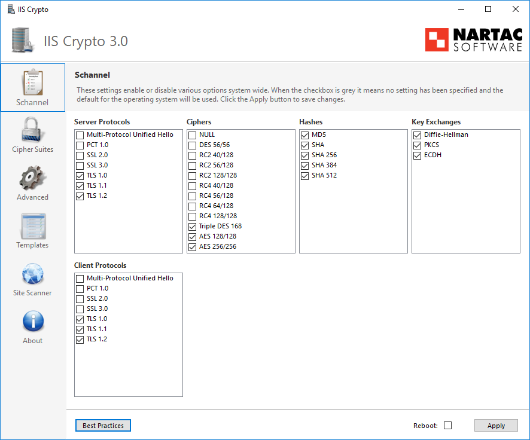

Overview
In response to numerous vulnerabilities associated with deprecated cryptographic protocols, customers frequently express the need to disable SSL or TLS 1.0/1.1 for StealthAUDIT Reporting or Access Information Center. It is important to note that our products are constructed atop the Microsoft IIS/SChannel technology stack to power these server components.
Instructions
For the configuration of the SChannel registry keys, follow the recommendations in this article: Restrict the use of certain cryptographic algorithms and protocols in Schannel.dll ⸱ Microsoft 🡥
TIP: We recommend customers to review the list of ciphers and cryptographic algorithms with their internal security teams to understand what combination both meets the needs of their security best practices as well as the platforms that are required to access our product. Stealthbits recommends disabling SSL and TLS 1.0, and 1.1 whenever possible.
As an alternative to manually manipulating the registry there is a tool called IISCrypt. It helps to provide an easy to configure experience for these settings. While the name implies that it is targeted at IIS, it also works for our internal webserver. You can download the tool here: IIS Crypto – ⸱ Nartac Software 🡥
A screenshot is shown below for convenience:
